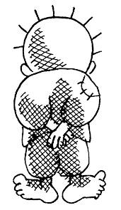
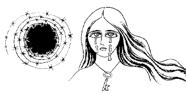

Naji Al Ali
- Artist background
- Art works
- Handala
- Impact on revolution
- Book
Artist Background
Naji Salim al ali who was born in 1938 in the northern Palestinian village of Al-shairara, was a Palestiniancartoonist noted for the political criticism of the Arab regimes and Israel in his works, and was assassinated for the honesty and dedication to truth he showed in his work.
Learn more about this beloved artistArt works
| Although barbed wire represent the harsh present for a tearful palestinian woman,she clings onto hope nonethless. | The strength of writing, drawing and education is mightier than any weapon. |
 |
 |
| A palestinian girls braids pinned accros through barbed wires to signify the endlesss suffering of palestinian refugees. | One day the barbed wire, fencing the palestinians out of their homeland, will be transformed, and the suffering of the people will end. |
Handala
In most of Naji al-Ali's cartoons there stands a small boy viewed from the backside. That small boy is Naji al-Ali himself as a child expelled from his Palestinian homeland. Naji named the character Hanzala... which means "bitterness" in Arabic. The artist saw his Hanzala character as a bold witness to history. Naji Al ali says "Handala was born ten years old, and he will always be ten years old. At that age, I left my homeland, and when he returns, Handala will still be ten, and then he will start growing up. The laws of nature do not apply to him. He is unique. Things will become normal again when the homeland returns." Handala, the refugee child who is present in every cartoon, remains a potent symbol of the struggle of the Palestinian people for justice and self-determination.
Check out more about Naji al ali's signature character HandalaImpact on Revolution
More than twenty-five years after his death, Naji Al-Alis cartoons continue to resonate with people in the Middle East, telling stories about the region that remain as true today as they were when he was alive. to this day, he is regarded as one of the most influential Arab artists of the 20th century. Naji al-Ali remains a hero in the Arab world, in particular to the Palestinians, who say his name with the same tenderness with which they mention their great poets. His iconic figure, Hanthala, remains a potent Palestinian symbol and will for a long time to come. Unfortunately, with the Middle Easts twin taps of violence and despair still open, there is all too much for Hanthala to see.
Learn more about his achievmentsBook
The pen is mightier than the sword, they say. The Palestinian political cartoonist Naji al-Ali certainly hoped it might be, and once drew a sword with a pen nib at its point. More characteristic of his peculiar genius for symbolism is the drawing used on the cover of this book, A Child in Palestine, in which the pen stands upright, its nib doubling as a candle flame. It's a potently simple image, yet complex.
check out more of naji's artworks in this book